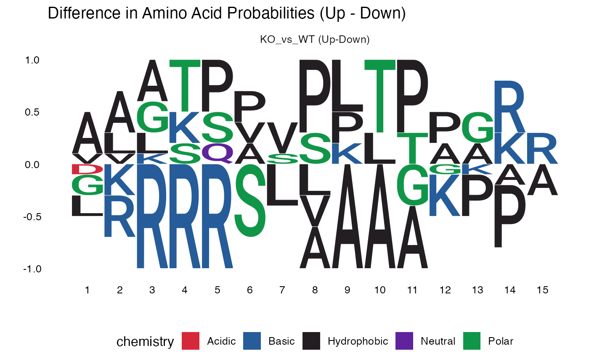

Plot Difference Sequence Logo (Upregulated - Downregulated)
plot_diff_logo.RdThe function computes position weight matrices (PWMs) for both upregulated and downregulated sites, then calculates their difference (Up - Down). Positive values indicate amino acids enriched in upregulated sites, while negative values indicate enrichment in downregulated sites.
This approach is particularly useful for:
Identifying kinases with opposing activity changes
Detecting motif shifts between conditions
Highlighting position-specific amino acid preferences
Arguments
- sig_sites
A data frame containing significant phosphorylation sites with the following required columns:
- contrast
Character. The name of the experimental contrast (e.g., "KO_vs_WT")
- regulation
Character. Either "upregulated" or "downregulated"
- SequenceWindow
Character. The amino acid sequence window surrounding the phosphorylation site (typically 15 amino acids centered on the modified residue)
Value
A ggplot2 object created by ggseqlogo showing difference
logos for each contrast. Returns NULL if no contrasts have both
upregulated and downregulated sequences.
Details
Creates a difference sequence logo plot that visualizes the difference in amino acid frequencies between upregulated and downregulated phosphorylation sites. This visualization helps identify kinase-specific motifs that are differentially regulated between experimental conditions.
The difference PWM is calculated as: $$PWM_{diff} = PWM_{up} - PWM_{down}$$
For each position in the sequence window, the function calculates the frequency of each of the 20 standard amino acids. The difference in frequencies is then visualized using the 'custom' method in ggseqlogo, where:
Letters above the baseline (positive values) are enriched in upregulated sites
Letters below the baseline (negative values) are enriched in downregulated sites
Letter height corresponds to the magnitude of the frequency difference
See also
ggseqlogo for the underlying plotting function
Examples
# Create example data with phosphorylation site motifs
sig_sites <- data.frame(
contrast = rep("KO_vs_WT", 20),
regulation = rep(c("upregulated", "downregulated"), each = 10),
SequenceWindow = c(
# Upregulated: Proline-directed (CDK-like: S/T-P-x-K)
"AAATPASPLTPGKRA", "GGGKSPVSPLTPGKR", "AAATPASPLTPGKRA",
"LLLSQVSPKTPAAAA", "AAATPASPLTPGKRA", "GGGKSPVSPLTPGKR",
"VVKTPASPLTPGKRA", "AAATPASPLTPGKRA", "LLLSQVSPKTPAAAA",
"GGGKSPVSPLTPGKR",
# Downregulated: Basophilic (PKA-like: R-R-x-S)
"LRRRRSLAAAGKPAA", "GGRRRASVAAAGKPA", "LRRRRSLAAAGKPAA",
"GKRRRSSLAAAGKPA", "LRRRRSLAAAGKPAA", "GGRRRASVAAAGKPA",
"DKRRRSSLAAAGKPA", "LRRRRSLAAAGKPAA", "GKRRRSSLAAAGKPA",
"GGRRRASVAAAGKPA"
)
)
# Generate difference logo
diff_plot <- plot_diff_logo(sig_sites)
#> Warning: `aes_string()` was deprecated in ggplot2 3.0.0.
#> ℹ Please use tidy evaluation idioms with `aes()`.
#> ℹ See also `vignette("ggplot2-in-packages")` for more information.
#> ℹ The deprecated feature was likely used in the ggseqlogo package.
#> Please report the issue at <https://github.com/omarwagih/ggseqlogo/issues>.
print(diff_plot)
